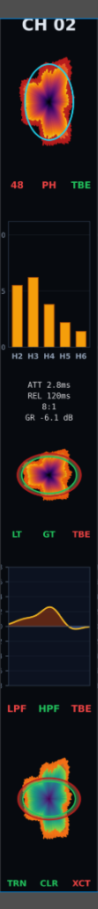

Ecosystem render — racks, surface, and entry nodes as one coherent system.
System Q Recording Environment
A unified musician ecosystem for rehearsal, recording, sound shaping, mix review, and venue playback. Workstation, Cube, Racks, Control, Venue, and software all share one operating language.
00 — Why it matters
GIG is not just another interface or controller. These are the ideas that make it a product family.
Analog and software paths can create serious tone before piling on extra plugins or outboard.
A SpaceMouse-style command surface keeps focus, selection, and value changes in one hand position.
Touchscreen rack frames can accept analog PCB card families for preamp, compression, EQ, and tone.
The recorded mix plays back at its intended level relationships, then adapts to the room.
01 — Ecosystem
Each player brings a workstation, connects to the band, records through Cube or Racks, shapes the sound, and carries the mix into Venue while Control keeps the whole system under one tactile language.
Each musician plugs into a personal workstation for sounds, monitoring, playback, processing, and session control.
The band rehearses inside the same connected environment they will use to capture and refine the session.
Choose the simpler Cube path or move into Racks for premium analog capture and processing.
Analog and software stages share one operating model so the sound can be dialed without breaking flow.
Use Control across rehearsal, studio, and live playback while Venue translates the result to the room.
02 — Hardware
The racks are the studio-grade analog core: two touchscreen-faced frames for preamplification, dynamics, EQ, harmonic stages, conversion, routing, monitoring, and summing. The front face is functional touchscreen control, not decoration.
The card-frame idea is the product leap: swap analog PCB cards for preamp, compressor, EQ, tone, dynamics, and future module families instead of replacing the entire piece of hardware.


03 — Modular I/O
Cubes are the simple modular I/O path into GIG: small nodes for fast setup, smaller sessions, and musicians who want the workflow without starting with the full rack footprint.

04 — Software
The software mirrors the rack and Control language: channel stages, POL-style visual editing, parameter focus, and recall stay consistent across analog and digital paths.
There is now a live browser prototype called Jimmy that sketches the direction: armed channel strips, parameter focus, POL-style stage behavior, and 6-DOF inspired editing.

Each stage uses POL (polar) editing: the mic pre and dynamics close in on the polar graph. Ring radius maps frequency (bigger = low, smaller = high).
Mic pre — input gain, HPF, phantom, phase and the polar focus view.
Harmonics — a unique 5-band harmonic processor (H1–H5) for controlled character.
Compressor — frequency-focused dynamics (with gate/limiter behavior in the same model).
EQ — band shaping that follows the same ring-driven frequency targeting.
Effects processor — transient designer + saturation/exciter as a single stage.
05 — Command
Control is the command surface for rehearsal, studio, mix, and live operation. Its 6‑DOF SpaceMouse-style edit control lets the operator select directionally and turn values without jumping across unrelated knobs, plugin windows, and menus.
It is the shared tactile layer across the whole ecosystem: touch focus, transport, monitoring, faders, and parameter editing in one surface.

06 — Personal Control
Each musician has an endpoint for instrument or microphone input, IEM mix, talkback, playback, recording, patches, sheet music, and session tools. It is the personal doorway into the band network.

07 — Output
Venue is the live output and room translation layer. It plays the audio file at the recorded mix's level relationships, then helps adapt that intended balance to the room.
Reference mic feedback can help with balancing and translation, so playback and final checks stay inside the same ecosystem.

Hardware chain from preamp to conversion. Dial in any character—clean, colored, or tube-saturated.
Show up, plug in, track. The system handles routing, clocking, and monitoring so you start making music immediately.
Every musician controls their own headphone mix. No amps, no extra rig—just the network and your ears.
Surface, software, and hardware present the same operating model. What you touch is what you hear.